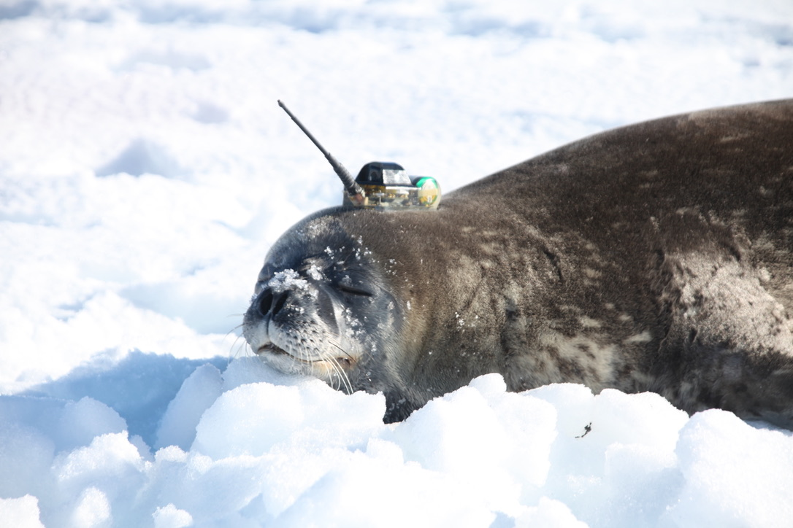
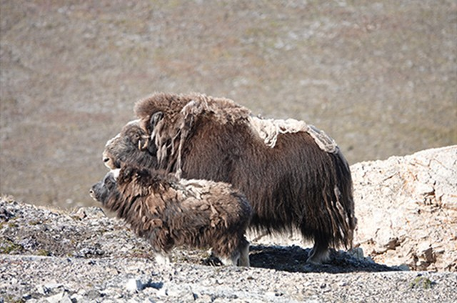

Diving and foraging behavior of Weddell seals near ice shelves in the Eastern Amundsen Sea, Antarctica
26th Biennial Conference on the Biology of Marine Mammals (SMM 2026), San Juan, Puerto Rico, 2026
I'm a Ph.D. student in the Department of Earth and Environmental Sciences at Seoul National University, advised by Dr. Won Young Lee (KOPRI) and Prof. Chung Yeon Hwang (SNU).
I'm currently conducting my research at the Division of Glacier and Earth Sciences, Korea Polar Research Institute (KOPRI).
My research focuses on the behavior of polar animals. By analyzing and understanding how animals behave, I aim to provide the knowledge that helps people coexist with wildlife.

26th Biennial Conference on the Biology of Marine Mammals (SMM 2026), San Juan, Puerto Rico, 2026

Ecology and Evolution, 12(5), e8879, 2022